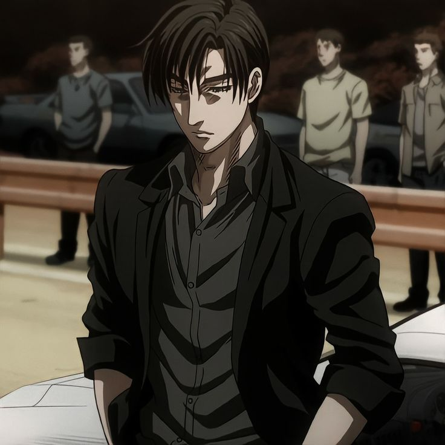
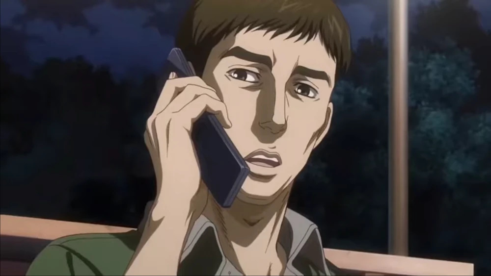
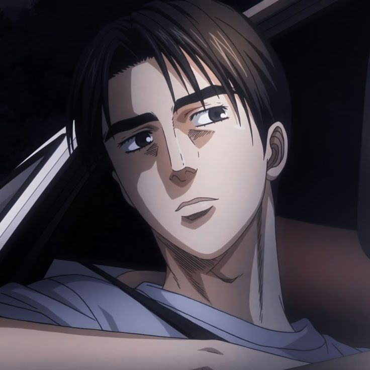
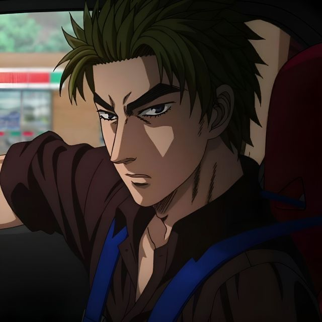
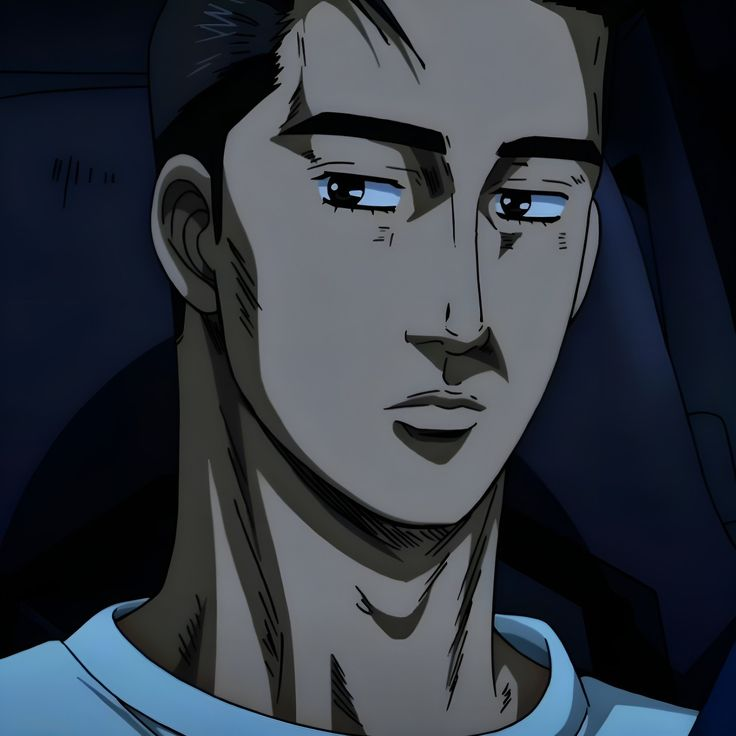
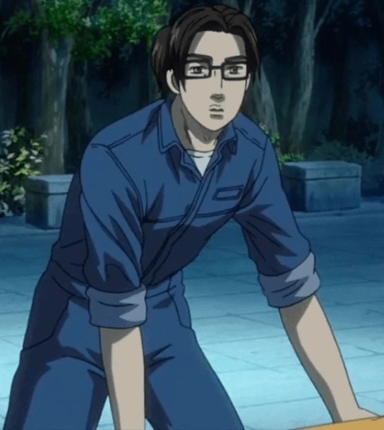
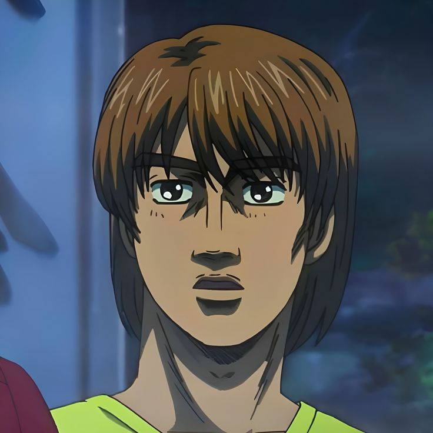

Что такое "Проект Ди"?
Project. D (プロジェクトD) — команда уличных гонщиков из
префектуры Гунма,
сформированная небезызвестным Такахаши Рёске.
Её цель: стать быстрейшими во всём регионе Канто и выиграть каждую
команду на её домашней трассе.
Девиз: "Не важно, кто наши соперники — мы не отступаем"
ИСТОРИЯ
Изначально, лидер команды, Такахаши Рёске, был одиноким гонщиком и
носил прозвище
"Белая Комета Акаги". Он учился в медицинском колледже, где
познакомился с девушкой
по имени Каори. Рё Такахаши был влюблён в неё, и именно она
сказала ему следовать своей мечте,
которая заключалась в тренировке лучших стритрейсеров и покорении
всего региона Канто.
Но была проблема: родители Каори хотели выдать её замуж за
другого, более состоятельного
мужчину даже несмотря на то, что девушка любила Рёске. Так и не
сумев рассказать всё родителям,
Каори покончила с собой.После
этого Рёске последовал её словам и сформировал команду
Akagi RedSuns с целью покорить всю префектуру Гунма и поставить
рекорды на всех трассах.
Но в одну ночь поменялось всё. Его
младший брат, Кёске, встретил на Акине Такуми Фудживару,
который
с лёгкостью обошёл его. Такуми просто помогал отцу в бизнесе, его
совсем не
интересовали автомобили и гонки. Но "роторные братья" смогли его
переубедить. Рё распустил
Akagi RedSuns и создал Project. D, следуя поставленноё цели. В
конечном итоге, он её достиг.
В настоящее время Project D выполнил своё предназначение и был
расформирован.
Пилоты команды стали профессиональными автогонщиками.
СОСТАВ КОМАНДЫ
Лидеры:
Рёске Такахаши
Основатель команды Project D. Рёске ради мечты перестал гоняться, но умудряется совмещать учёбу на медицинском вместе с тренерством. Также он очень умный и занимается разработкой "Скоростной теории общественных дорог".
Хироши Фумихиро
Заместитель Такахаши Рёске. Занимается организацией заездов и проверкой трасс.
Пилоты:
Такуми Фудживара
Также известный как "Белый призрак Акины". Он ас по спуску на своей Toyota Sprinter Trueno AE86. Очень талантливый водитель. За рулём с 12 лет.
Кёске Такахаши
Родной брат Рёске. Он ас по подъёму на своей Mazda RX-7 FD3S. Бывший участник Akagi RedSuns.
Механики и помощники:
Шуичи Мацумото
Персональный автомеханик Хачироку Фудживары. Во время поездок в другие префектуры является водителем фургона поддержки №3.
Томигучи
Персональный автомеханик RX-7 Кёске. Является водителем 4-го экспедиционного фургона.
Кента Накамура
Самый молодой участник распавшейся Akagi RedSuns. В Project D выполняет роль разведчика: он объезжает и анализирует трассы перед гонками. Такахаши Кёске его кумир, Кента очень хочет быть похожим на него.
НОВОСТИ
Цель команды Project D была выполнена.
Все команды уличных гонщиков из префектур Гунма, Тотиги, Ибараки,
Канагава, Тиба и Сайтама были побеждены.
Поэтому Project D закрывается, а этот сайт останется в память о нём.
В Японии появилась организация под названием MFG,
основанная Рёске Такахащи, которая проводит и транслирует уличные
гонки на автомобилях с двигателями внутреннего сгорания.
MFG был запущен как следующий шаг в проекте D и является ответом Реске
Такахаси на его теорию о предельной скорости на дорогах общего
пользования.
Изначально мероприятие было посвящено оказанию помощи районам,
наиболее пострадавшим от извержения вулкана Фудзи,
и каждый год большой процент выручки передается группам поддержки.